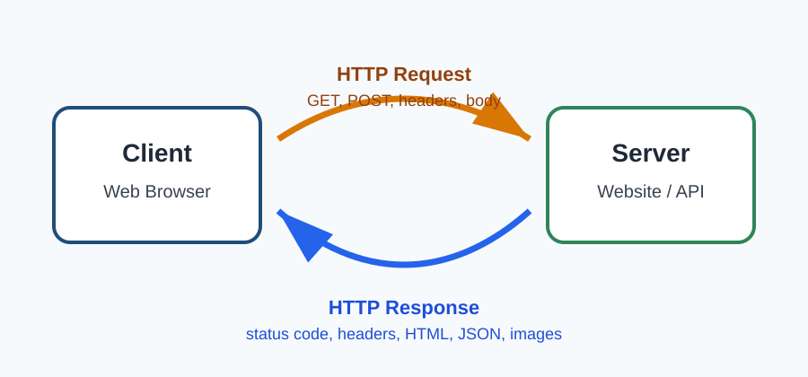

Milestone 3: Responsive and Mobile-Friendly Design
The completed site now adapts to desktop, tablet, and phone screens. Navigation collapses into a touch-friendly menu, images scale within their containers, wide tables can scroll without breaking the page, and quiz controls expand for comfortable mobile use.
- Responsive layouts at desktop, tablet, and mobile widths
- Accessible menu button with keyboard and screen-reader support
- Flexible images, cards, tables, and quiz controls
- Completed HTTP research organized across multiple topic pages
Abstract
HTTP, or Hypertext Transfer Protocol, is one of the most important technologies behind the World Wide Web. It allows browsers, websites, applications, APIs, cloud services, and mobile systems to communicate through a request-and-response model. This project explains what HTTP is, how it works, how it has evolved, and why it continues to matter for modern web development.
Originally created to transfer simple hypertext documents, HTTP has grown into a flexible protocol used for websites, streaming, cloud computing, authentication, APIs, and distributed systems. Today, HTTP works together with HTTPS, TLS encryption, caching, compression, content delivery networks, and newer versions such as HTTP/2 and HTTP/3.
New in Milestone #2
This version adds an interactive JavaScript quiz that checks answers, calculates a score, gives question-by-question feedback, and allows the user to reset and try again.
Take the HTTP QuizTable of Contents
Key Terms
HTTP Request and Response
